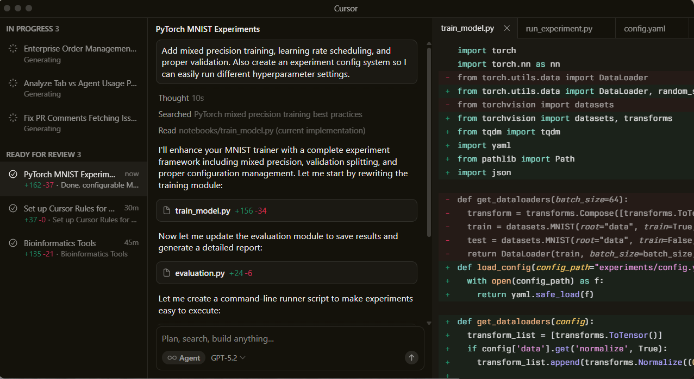
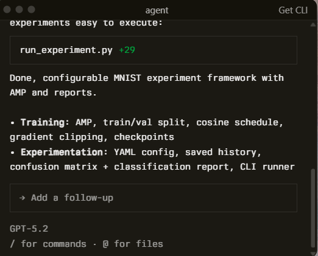
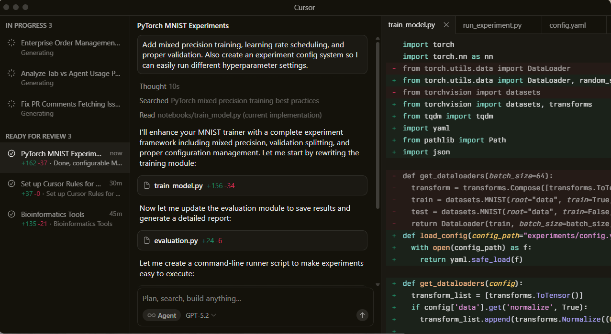
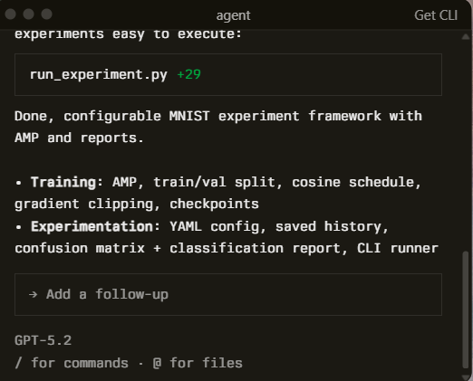
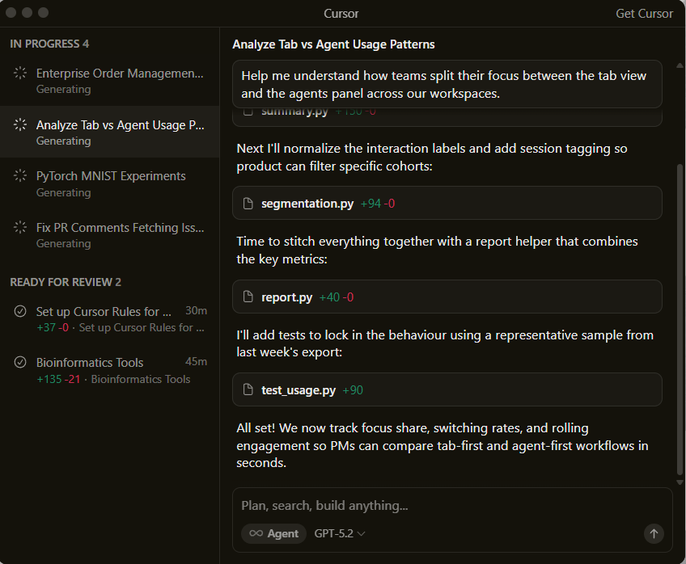
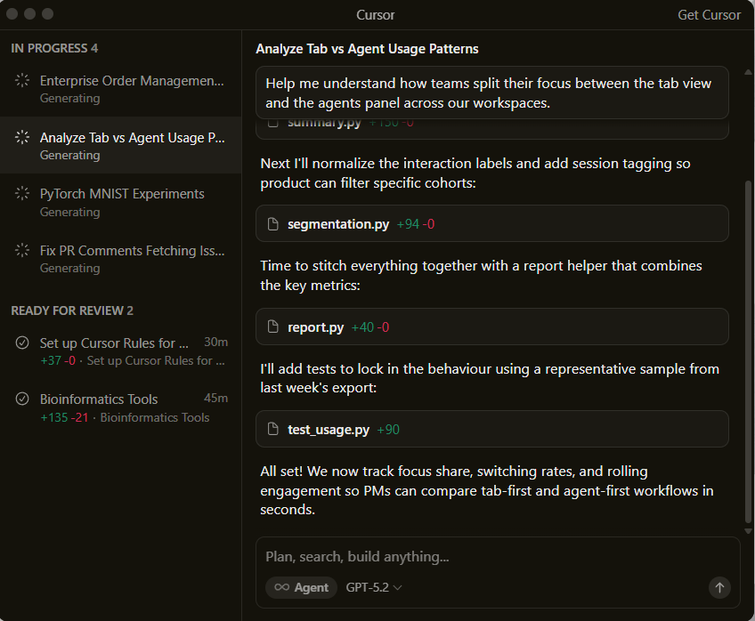
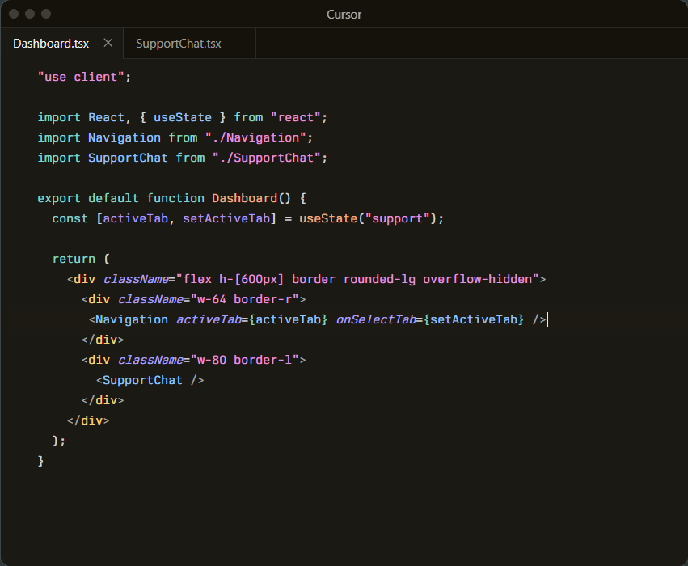
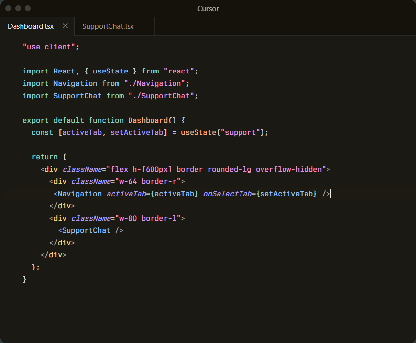
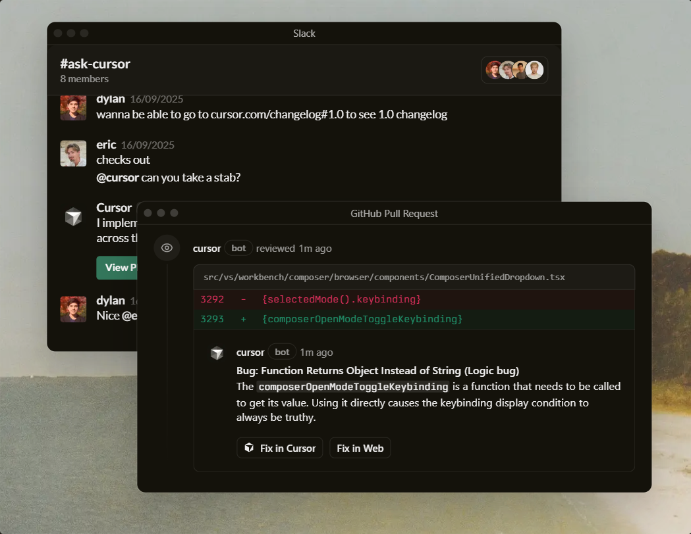

Built to make you extraordinarily productive,
Cursor is the best way to code with AI.
 



Trusted every day by millions of professional developers.


Agent turns ideas into code
A human-AI programmer, orders of magnitude more effective than any developer alone.
Learn about Agent → 

 

Magically accurate autocomplete
Our custom Tab model predicts your next action with striking speed and precision.
Learn about Tab →Everywhere software gets built
Cursor is in GitHub reviewing your PRs, a teammate in Slack, and anywhere else you work.
Learn about Cursor's ecosystem →

The new way to build software.
It was night and day from one batch to another, adoption went from single digits to over 80%. It just spread like wildfire, all the best builders were using Cursor.
Diana Hu
General Partner, Y Combinator
The most useful AI tool that I currently pay for, hands down, is Cursor. It's fast, autocompletes when and where you need it to, handles brackets properly, sensible keyboard shortcuts, bring-your-own-model... everything is well put together.
shadcn
Creator of shadcn/ui
The best LLM applications have an autonomy slider: you control how much independence to give the AI. In Cursor, you can do Tab completion, Cmd+K for targeted edits, or you can let it rip with the full autonomy agentic version.
Andrej Karpathy
CEO, Eureka Labs
Cursor quickly grew from hundreds to thousands of extremely enthusiastic Stripe employees. We spend more on R&D and software creation than any other undertaking, and there's significant economic outcomes when making that process more efficient and productive.
Patrick Collison
Co‑Founder & CEO, Stripe
It's official.
I hate vibe coding.
I love Cursor tab coding.
It's wild.
ThePrimeagen
@ThePrimeagen
It's definitely becoming more fun to be a programmer. It's less about digging through pages and more about what you want to happen. We are at the 1% of what's possible, and it's in interactive experiences like Cursor where models like GPT-5 shine brightest.
Greg Brockman
President, OpenAI